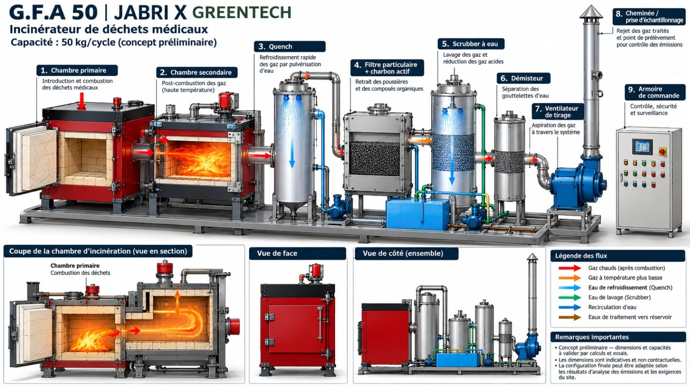

Combustion
Traitement thermique des déchets dans la chambre principale.
 G.F.A 50 · TRAITEMENT DES DÉCHETS MÉDICAUX
G.F.A 50 · TRAITEMENT DES DÉCHETS MÉDICAUXConçu pour les hôpitaux, cliniques, centres de santé et laboratoires, le G.F.A 50 associe une double chambre de combustion à un système intégré de traitement des gaz.
Schéma de principe : combustion, refroidissement, filtration et traitement des gaz.

Concept préliminaire — dimensions, capacités et configuration à valider par calculs et essais. Cliquez sur le schéma pour l’agrandir.
Le traitement des déchets et des émissions gazeuses s’organise en étapes complémentaires, de la combustion à la filtration.
Traitement thermique des déchets dans la chambre principale.
Traitement complémentaire des gaz dans une seconde chambre.
Refroidissement et traitement selon la configuration retenue.
Captation des poussières et traitement des émissions avant rejet.
Déchets médicaux non chimiques et non radioactifs. La nature et la compatibilité des flux doivent être validées avant le dimensionnement.
Étude de l’espace disponible, de la ventilation, des réseaux, de l’alimentation et de l’accès aux équipements.
Formation à la conduite, aux consignes de sécurité, aux cycles de fonctionnement et à l’entretien régulier.
Zone dédiée plane et bétonnée : 15 m² minimum indiqués dans le catalogue. Prévoir un dégagement d’au moins 1,5 m autour de l’équipement, un local ventilé ou un abri adapté et un accès de chargement dégagé.
Alimentation triphasée 380–400 V, 50 Hz, avec mise à la terre et disjoncteur dédié. La stabilité du réseau et le raccordement sont à vérifier avant la mise en service.
Point d’eau stable avec une pression minimale indiquée de 2 bars pour le lavage des gaz. Prévoir à proximité l’évacuation ou la récupération des effluents et condensats.
Prévoir un espace ventilé et sécurisé pour le combustible retenu, ainsi qu’une circulation adaptée aux bacs de déchets. L’implantation finale est validée pendant l’étude technique.
Valeurs présentées dans le catalogue : à confirmer avec JABRI X pour la configuration commandée et le site d’implantation.
Vérifier les courbes et températures sur l’interface HMI, inspecter visuellement les brûleurs et gérer les résidus après refroidissement, selon la procédure de l’équipement.
Suivre la pression différentielle des filtres, les niveaux et le pH du circuit de lavage, l’état des buses et l’étanchéité des joints.
Prévoir les contrôles des registres, vannes et servomoteurs, le graissage des organes mécaniques et le nettoyage programmé du circuit selon la configuration.
Organiser le diagnostic du réfractaire, l’étalonnage des capteurs et la vérification des automatismes avec l’équipe technique.
Repères de maintenance issus du catalogue. Les interventions sont réalisées par du personnel formé selon la notice d’exploitation et les consignes de sécurité propres à l’installation.
Chargement sécurisé des déchets, pilotage de l’interface HMI, maintenance de premier niveau et gestion des résidus : le catalogue prévoit une formation des opérateurs.
Le catalogue présente une assistance technique à distance, des interventions sur site et la disponibilité de pièces telles que thermocouples, filtres, brûleurs et pièces mécaniques. Les modalités sont précisées dans l’offre.
Chaque étude commence par les bonnes informations. Notre équipe vous accompagne pour les réunir.
Précisez la nature des matières ou déchets, les volumes estimés, leur état physique, le rythme de fonctionnement souhaité et le lieu d’implantation. Des photos et plans du site peuvent compléter votre demande.
Le catalogue présente des familles de solutions. Le dimensionnement, les matériaux, l’alimentation, les options de contrôle et les accessoires sont étudiés selon les contraintes du projet.
Le catalogue le destine aux déchets médicaux non chimiques et non radioactifs. La compatibilité précise des flux doit être validée pendant l’étude technique.
JABRI X présente un accompagnement comprenant préparation de l’installation, mise en service, formation des opérateurs et transfert de compétences. Le périmètre est défini dans votre offre.
Ils dépendent de la configuration retenue, de la capacité, des accessoires et des conditions d’installation. Contactez JABRI X pour obtenir une proposition adaptée à votre besoin.
Les opérations de contrôle, de nettoyage et d’entretien sont organisées selon l’équipement et les conditions d’exploitation. JABRI X propose également assistance technique, diagnostic et accompagnement pour les pièces de rechange.
Contactez-nous pour une étude, une demande d’équipement ou un besoin d’assistance.
Présentez votre activité, vos matières et vos objectifs à l’équipe JABRI X.